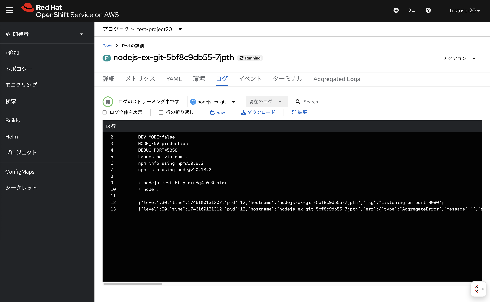
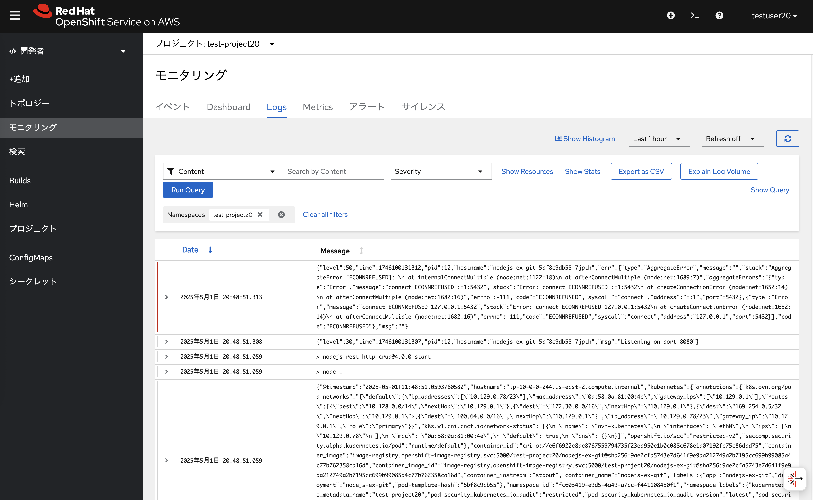

OpenShiftコンソールでのログ確認 演習の概要 このモジュールでは、OpenShiftのコンソールでのログ集約を確認します。 OpenShiftコンソールでのログ確認 OpenShiftコンソールでのログ集約を確認します。管理者アカウント( cluster-admin など)でログインして、左サイドメニューの「モニタリング」→「Logs」から確認できます。 本演習をワークショップ形式で実施している場合、インストラクターが管理者アカウントを案内します。%USERID% とは異なるブラウザを利用することをお勧めします。 表示されたログについて、様々なフィルタリング(ネームスペースやコンテナ単位など)ができるので、色々試してみてください。 ローカルユーザーに対するログ集約の参照権限付与 ローカルユーザーは自分が作ったコンテナアプリケーションのログを、Pod単位で見ることができます。  ただし、デフォルトだと、プロジェクト単位でのログ集約を確認するための権限がローカルユーザーに無いため、下記のようなメッセージが表示されてしまいます。 そこで、管理者アカウントでローカルユーザーに対するログ集約の参照権限を付与してみます。 管理者アカウントで再ログインして、OpenShiftコンソール右上の「+」ボタンから以下のYAMLをインポートします。このYAMLでは view-application-logs というRoleBindingリソースを test-project20 プロジェクトに作っています。 ユーザーとして testuser20 も指定しているので testuser20 ユーザーが test-project20 プロジェクト上に作られたアプリケーションに関するログ集約を、OpenShiftコンソール上で見れるようになります。 このYAMLの testuser20 と test-project20 については、自分が使っているユーザー名とプロジェクト名に適宜変更してください。 apiVersion: rbac.authorization.k8s.io/v1 kind: RoleBinding metadata: name: view-application-logs namespace: %USERID%-app roleRef: apiGroup: rbac.authorization.k8s.io kind: ClusterRole name: cluster-logging-application-view subjects: - kind: User name: %USERID% apiGroup: rbac.authorization.k8s.io RoleBindingリソースを作成したあとに testuser20 ユーザーで再ログインしてみると、test-project20 プロジェクトで作成されたアプリケーションに関するログ集約を確認できます。  ログ集約については、他のアプリケーションをデプロイすることでも確認してみることができます。 色々試してみてください。